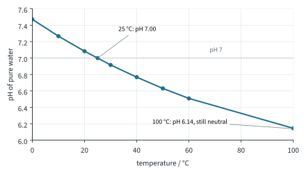
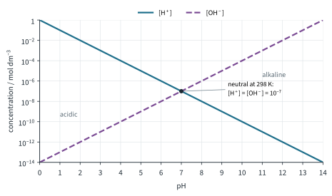
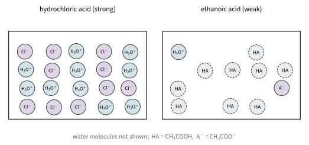
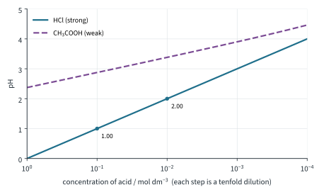

Chemistry of Aqueous Solutions 1
Topic 10 · Chemistry of Aqueous Solutions Part 1
On this page
Introduction
Chemical reactions in aqueous solutions are important in the chemical laboratory, in the natural environment, and most of all, in the human body. Many reactions in aqueous solutions involve weak acids or bases or slightly soluble substances, and in such cases one or more equilibria are set up in solution. Furthermore, the equilibrium state is usually reached almost instantaneously, and so we can use the equilibrium law (Topic 9) to calculate the concentrations and amounts of the different species in solution. Such information enables us to understand, predict, and control what will happen in solution, and it has numerous practical applications. Equilibrium constants may be used to obtain information about reactions in solution, and in many cases the results of equilibrium calculations will be applied to practical problems.
This topic uses the Brønsted-Lowry definitions: an acid is a proton donor and a base is a proton acceptor. The three theories of acids and bases, and how to pick out conjugate pairs, are in Topic 4. Here we care about something else: how far an acid or base reacts with water, and what that does to the pH. This Part covers water, pH, strong and weak acids and bases, Ka and Kb, and pH calculations. Part 2 covers titration curves, indicators and buffers; Part 3 covers sparingly soluble salts.
Key terms
You will use these terms throughout the topic.
| Term | Meaning |
|---|---|
| Strong acid | An acid that dissociates completely in aqueous solution, e.g. HCl, HNO3. |
| Weak acid | An acid that dissociates only partially in aqueous solution, e.g. CH3COOH. |
| Strong base | A base that dissociates (or reacts with water) completely in aqueous solution, e.g. NaOH, Ba(OH)2. |
| Weak base | A base that reacts only partially with water, e.g. NH3. |
| Degree of dissociation | The fraction (often given as a percentage) of the acid or base molecules that have dissociated at equilibrium. |
| Ionic product of water, Kw | Kw = [H+][OH−]; 1.00 × 10−14 mol2 dm−6 at 298 K. |
| pH, pOH | pH = −lg[H+]; pOH = −lg[OH−]. |
| Acid dissociation constant, Ka | The equilibrium constant for HA(aq) ⇌ H+(aq) + A−(aq); pKa = −lg Ka. |
| Base dissociation constant, Kb | The equilibrium constant for B(aq) + H2O(l) ⇌ BH+(aq) + OH−(aq); pKb = −lg Kb. |
| Monobasic (monoprotic) acid | An acid that can donate one proton per molecule, e.g. HCl, CH3COOH. |
Strong and weak describe the extent of dissociation. Concentrated and dilute describe how much acid is dissolved per dm3. They are different ideas: 10 mol dm−3 ethanoic acid is a concentrated solution of a weak acid; 0.001 mol dm−3 hydrochloric acid is a dilute solution of a strong acid.
Water and the ionic product, Kw
Even the purest water conducts electricity very slightly, because a tiny fraction of the water molecules transfer a proton to one another:
H2O(l) + H2O(l) ⇌ H3O+(aq) + OH−(aq)
or, more simply,1
H2O(l) ⇌ H+(aq) + OH−(aq)
Water is in vast excess and its concentration hardly changes, so it is left out of the equilibrium expression (the Topic 9 Part 1 rule for a solvent). What is left is the ionic product of water:
Kw = [H+][OH−] = 1.00 × 10−14 mol2 dm−6 at 298 K
(This value is in the Data Booklet.) In pure water every H+ comes with one OH−, so [H+] = [OH−] = √(1.00 × 10−14) = 1.00 × 10−7 mol dm−3. That is 1.00 × 10−7 × 6.02 × 1023 = 6.02 × 1016 H+ ions, and the same number of OH− ions, in every dm3. It sounds a lot, but there are 55.6 mol of water molecules in a dm3, so only about 1 molecule in 5.6 × 108 is dissociated.
Kw applies to every aqueous solution, not just pure water. Add acid and [H+] goes up, so [OH−] must go down to keep the product at 1.00 × 10−14 (at 298 K).
Kw depends on temperature
Like every equilibrium constant, Kw changes with temperature. The dissociation of water is endothermic (bonds are broken), so a rise in temperature shifts the position to the right (Le Chatelier, Topic 9 Part 2) and Kw increases (literature values):
| Temperature / °C | 0 | 25 | 50 | 100 |
|---|---|---|---|---|
| Kw / mol2 dm−6 | 1.14 × 10−15 | 1.00 × 10−14 | 5.48 × 10−14 | 5.13 × 10−13 |
| pH of pure water | 7.47 | 7.00 | 6.63 | 6.14 |

pH and pOH
The concentrations of hydrogen ions, and indirectly of hydroxide ions, are given by a pH number. pH is defined as the negative logarithm (to base 10) of the hydrogen or hydronium ion concentration. The equations are:2
pH = −lg[H+] pOH = −lg[OH−] pKw = −lg Kw
Taking −lg of Kw = [H+][OH−] gives a very useful link:
pH + pOH = pKw = 14.00 at 298 K
To go back from pH to concentration, [H+] = 10−pH. Because the scale is logarithmic, a change of 1 pH unit is a tenfold change in [H+]: pH 3 has ten times the [H+] of pH 4, and a hundred times that of pH 5. Fig 2 shows both concentrations across the scale.

Some values to check your understanding:
| pH | [H+] / mol dm−3 | [OH−] / mol dm−3 | Kw = [H+][OH−] / mol2 dm−6 |
|---|---|---|---|
| 7 | 1.00 × 10−7 | 1.00 × 10−7 | 1.00 × 10−14 |
| 2 | 1.00 × 10−2 | 1.00 × 10−12 | 1.00 × 10−14 |
| 13 | 1.00 × 10−13 | 1.00 × 10−1 | 1.00 × 10−14 |
At any pH, Kw = [H+] × [OH−] = 1.00 × 10−14 mol2 dm−6 and pKw = 14.00 (at 298 K).
Strong and weak acids and bases
Strong acids and strong bases
Strong acids, like HCl or HNO3, are such good proton donors that none of their own molecules can remain in aqueous solution. All HCl molecules, for example, transfer their protons to H2O molecules, and so the solution contains only H3O+(aq) and Cl−(aq) ions (and water):
HCl(g) + H2O(l) → H3O+(aq) + Cl−(aq)
The single arrow says the reaction is complete. (Which species is the acid, which the base, and the two conjugate pairs, are worked out in Topic 4.)
Similarly, the ions of strong bases are such good proton acceptors that they cannot remain in aqueous solution. Sodium hydroxide is an ionic solid that simply separates into its ions. Barium oxide is different: its O2− ions are not left in solution, because each one takes a proton from a water molecule and becomes OH−. The water molecule that loses the proton becomes a second OH−. The Ba2+ ions take no part; they are spectator ions.
NaOH(s) → Na+(aq) + OH−(aq)
O2− + H2O → 2OH− so BaO(s) + H2O(l) → Ba2+(aq) + 2OH−(aq)
Either way, a solution of BaO or Ba(OH)2 contains only Ba2+(aq) and OH−(aq) ions, two OH− for every Ba2+.
Weak acids and weak bases
Ethanoic acid is a weak acid because it is not a strong enough proton donor to be entirely converted to its conjugate base in aqueous solution. At equilibrium, most of the CH3COOH molecules are still there:
CH3COOH(aq) + H2O(l) ⇌ CH3COO−(aq) + H3O+(aq)
A given concentration of a weak acid therefore produces fewer hydronium ions (H3O+) per unit volume, and so less acidity, than the same concentration of a strong acid. In 0.100 mol dm−3 ethanoic acid only about 1.3 % of the molecules are dissociated (worked example 3); in 0.100 mol dm−3 hydrochloric acid, 100 % are (Fig 3).

Ammonia is a weak base because it is not a strong enough proton acceptor to be entirely converted to its conjugate acid in aqueous solution:
NH3(aq) + H2O(l) ⇌ NH4+(aq) + OH−(aq)
Telling them apart
Compare 0.100 mol dm−3 solutions of hydrochloric acid and ethanoic acid at the same temperature:
| Test | HCl (strong) | CH3COOH (weak) | Why |
|---|---|---|---|
| pH (meter or Universal Indicator) | 1.00 | 2.87 | [H+] is lower in the weak acid |
| Electrical conductivity | high | low | fewer ions in the weak acid |
| Add Mg ribbon or CaCO3 | fast effervescence | slow effervescence | rate depends on [H+] |
| Total volume of H2 from excess Mg | same | same | same amount of acid: as H+ is used up, more CH3COOH dissociates |
The last row matters in titrations too: a weak acid needs exactly the same volume of alkali to neutralise it as the same amount of a strong acid (Part 2).
The acid dissociation constant, Ka
The acid dissociation constant, Ka, is the temperature-dependent equilibrium constant for the reaction in which a weak acid is in equilibrium with its conjugate base in aqueous solution. Notice that in the equilibrium expression below the concentration of water is not included. This is because water is vastly in excess and the amount changes negligibly when equilibrium is set up. Ka can be thought of as a modified equilibrium constant. For example,
CH3COOH(aq) + H2O(l) ⇌ CH3COO−(aq) + H3O+(aq)
Ka = [CH3COO−][H3O+] / [CH3COOH] = 1.8 × 10−5 mol dm−3 at 298 K
For a general weak acid HA, written the short way:
HA(aq) ⇌ H+(aq) + A−(aq) Ka = [H+][A−] / [HA] units: mol dm−3
Therefore, the larger the value of Ka, the stronger the acid. The value can be expressed as the logarithm of its reciprocal, called pKa. Therefore,
pKa = −lg Ka
The smaller the value of pKa, the stronger the acid. Ka is a better measure of the strength of an acid than pH, because adding more water to the acid solution will not change the value of the equilibrium constant Ka, but it will change the H+ ion concentration on which pH depends. Some values (literature values; the Data Booklet does not list Ka):
| Acid | Equilibrium | Ka / mol dm−3 | pKa |
|---|---|---|---|
| chloroethanoic acid | ClCH2COOH ⇌ H+ + ClCH2COO− | 1.4 × 10−3 | 2.85 |
| methanoic acid | HCOOH ⇌ H+ + HCOO− | 1.8 × 10−4 | 3.74 |
| benzoic acid | C6H5COOH ⇌ H+ + C6H5COO− | 6.3 × 10−5 | 4.20 |
| ethanoic acid | CH3COOH ⇌ H+ + CH3COO− | 1.8 × 10−5 | 4.74 |
| carbonic acid | CO2 + H2O ⇌ H+ + HCO3− | 4.5 × 10−7 | 6.35 |
| ammonium ion | NH4+ ⇌ H+ + NH3 | 5.56 × 10−10 | 9.26 |
| hydrocyanic acid | HCN ⇌ H+ + CN− | 4.9 × 10−10 | 9.31 |
Strong acids such as HCl have Ka values so large that they are not usually quoted: they are "completely" dissociated.
The base dissociation constant, Kb
Instead of an acid constant Ka, a base constant Kb can be used for bases. For ammonia,
NH3(aq) + H2O(l) ⇌ NH4+(aq) + OH−(aq)
the base constant is defined by the expression (water again left out)
Kb = [NH4+][OH−] / [NH3] = 1.8 × 10−5 mol dm−3 at 298 K pKb = −lg Kb = 4.74
The larger Kb (smaller pKb), the stronger the base. Literature values:
| Base | Kb / mol dm−3 | pKb |
|---|---|---|
| methylamine (methanamine), CH3NH2 | 4.4 × 10−4 | 3.36 |
| ammonia, NH3 | 1.8 × 10−5 | 4.74 |
| ethanoate ion, CH3COO− | 5.56 × 10−10 | 9.26 |
| phenylamine, C6H5NH2 | 4.3 × 10−10 | 9.37 |
Ka, Kb, pH and pOH
In general, an acid and its conjugate base (or a base and its conjugate acid) are linked through water. Take ammonia and its conjugate acid, the ammonium ion:
NH4+(aq) ⇌ NH3(aq) + H+(aq) Ka = [NH3][H+] / [NH4+]
NH3(aq) + H2O(l) ⇌ NH4+(aq) + OH−(aq) Kb = [NH4+][OH−] / [NH3]
Multiply the two expressions: [NH3] and [NH4+] cancel, and what is left is [H+][OH−] = Kw.
So Ka(NH4+) = (1.00 × 10−14) / (1.8 × 10−5) = 5.56 × 10−10 mol dm−3, and pKa = 14.00 − 4.74 = 9.26.3 In the same way, Kb(CH3COO−) = (1.00 × 10−14) / (1.8 × 10−5) = 5.56 × 10−10 mol dm−3.
Because the product is fixed, the stronger the acid, the weaker its conjugate base, and the reverse. The conjugate base of a strong acid (Cl− from HCl, NO3− from HNO3) is so weak that it has no effect on pH at all. The conjugate base of a weak acid (CH3COO−) is a weak base: this is why sodium ethanoate solution is slightly alkaline (Part 2).
Calculating pH
The syllabus asks for four cases: strong acids, strong bases, weak monobasic acids and weak monoacidic bases. In every case, find [H+] (or [OH−]) first, then take −lg. Give pH to 2 decimal places.
Strong acids
A strong monobasic acid is completely dissociated, so [H+] = concentration of the acid.4
Worked example 1
Calculate the pH of 0.0500 mol dm−3 hydrochloric acid, and of the solution made by diluting it tenfold with water.
[H+] = 0.0500 mol dm−3 pH = −lg 0.0500 = 1.30
after dilution: [H+] = 0.00500 mol dm−3 pH = −lg 0.00500 = 2.30
A tenfold dilution of a strong acid raises the pH by exactly 1.5
Strong bases
Find [OH−] from the formula of the base, then pOH, then pH = 14.00 − pOH. (Or use [H+] = Kw / [OH−]: it gives the same answer.)
Worked example 2
Calculate the pH of (a) 0.0200 mol dm−3 sodium hydroxide, (b) 0.0100 mol dm−3 barium hydroxide, at 298 K.
(a) [OH−] = 0.0200 mol dm−3; pOH = −lg 0.0200 = 1.70; pH = 14.00 − 1.70 = 12.30
(b) (To answer (b), notice that each Ba(OH)2 gives two OH− ions.) [OH−] = 2 × 0.0100 = 0.0200 mol dm−3; pH = 12.30, the same as (a).
Weak acids
For a weak acid HA of concentration c mol dm−3, let x mol dm−3 dissociate:
| HA(aq) | ⇌ H+(aq) | + A−(aq) | |
|---|---|---|---|
| Initial / mol dm−3 | c | 0 | 0 |
| Equilibrium / mol dm−3 | c − x | x | x |
Two approximations make this easy:
- All the H+ comes from the acid (the H+ from water, 10−7 mol dm−3 at most, is negligible), so [H+] = [A−] = x.
- The acid is weak, so x is small compared with c, and [HA] = c − x ≈ c.
Then Ka = x2 / c, which gives
Worked example 3
Calculate the pH of 0.100 mol dm−3 ethanoic acid (Ka = 1.8 × 10−5 mol dm−3) and its degree of dissociation. Compare it with 0.100 mol dm−3 hydrochloric acid.
[H+] = √(1.8 × 10−5 × 0.100) = √(1.8 × 10−6) = 1.34 × 10−3 mol dm−3
pH = −lg (1.34 × 10−3) = 2.87
degree of dissociation = (1.34 × 10−3) / 0.100 × 100 % = 1.34 %
1.34 % is well under 5 %, so the approximation is fine. 0.100 mol dm−3 HCl has pH 1.00: its [H+] is about 75 times larger.
Now dilute the ethanoic acid tenfold, to 0.0100 mol dm−3: [H+] = √(1.8 × 10−7) = 4.24 × 10−4 mol dm−3, pH 3.37, and 4.24 % dissociated. The pH has risen by only 0.50, not 1.00, because dilution shifts the position of equilibrium to the right, to the side with more dissolved particles (the same argument as in Topic 9 Part 2): a larger fraction of the acid dissociates and partly makes up for the dilution (Fig 4).

Beyond the syllabus: if the check fails, the formula still gives an answer, but a less accurate one. For 0.0500 mol dm−3 methanoic acid, √(Ka c) gives [H+] = 3.0 × 10−3 mol dm−3, which is 6.0 % of c; the pH by the formula is 2.52, against 2.54 from the full calculation (a quadratic, which the syllabus does not ask for).
Worked example 4: Ka from a pH
A 0.100 mol dm−3 solution of methanoic acid has pH 2.37. Calculate Ka and pKa.
(To find Ka, you first need [H+], and [H+] = [HCOO−].)
[H+] = 10−2.37 = 4.27 × 10−3 mol dm−3 = [HCOO−]
Ka = [H+][HCOO−] / [HCOOH] = (4.27 × 10−3)2 / 0.100 = 1.8 × 10−4 mol dm−3
pKa = −lg (1.8 × 10−4) = 3.74. Check: 4.27 × 10−3 is 4.3 % of 0.100, under 5 %.
Weak bases
Exactly the same reasoning with B(aq) + H2O(l) ⇌ BH+(aq) + OH−(aq) gives
Worked example 5
Calculate the pH of 0.100 mol dm−3 aqueous ammonia (Kb = 1.8 × 10−5 mol dm−3) at 298 K.
[OH−] = √(1.8 × 10−5 × 0.100) = 1.34 × 10−3 mol dm−3
pOH = −lg (1.34 × 10−3) = 2.87 pH = 14.00 − 2.87 = 11.13
(1.34 % of the ammonia has reacted, so the approximation is fine.) Compare 0.100 mol dm−3 NaOH: pOH 1.00, pH 13.00.
Summary
Additional information
- H+(aq) is shorthand for H3O+(aq), the hydronium (oxonium) ion: a bare proton never exists on its own in water (Topic 4). Both forms are used in this topic, and [H+] means the same as [H3O+]. ↩
- Beyond the syllabus: pH can go below 0 (2.0 mol dm−3 HCl, pH −0.30) and above 14. In concentrated solutions the simple definition becomes inaccurate, because the ions no longer behave independently. ↩
- Keep the unrounded Ka: −lg(5.56 × 10−10) = 9.26, but −lg(5.6 × 10−10) = 9.25. Both Ka and pKa for NH4+ in the table come from Kb(NH3) and Kw. ↩
- Beyond the syllabus: sulfuric acid is not a simple case: its first proton is lost completely, but HSO4− is only a weak acid, so [H+] in dilute H2SO4 is between c and 2c. Avoid it in pH calculations unless the question tells you how to treat it. ↩
- Beyond the syllabus: this stops working for very dilute acid. 1.0 × 10−8 mol dm−3 HCl does not have pH 8 (an acid cannot be alkaline); the H+ from water itself is now larger than that from the acid, and the true pH is 6.98. ↩